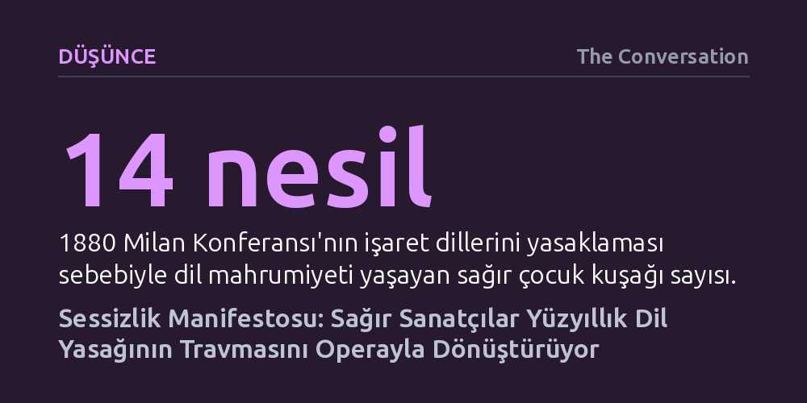

DUSUNCE · The Conversation · 2026-10-14
Avustralya'da sahnelenen 'Sessizlik Manifestosu' operası, 1880 Milan Konferansı'nın işaret dillerini yasaklayan ve nesiller boyu süren travmasını sağır bakış açısıyla sahneye taşıyor. Eser, ses yerine titreşim ve görsel şiir kullanarak tarihsel adaletsizliği kolektif bir iyileşme alanına dönüştürüyor.
Sağırlığı tıbbi bir eksiklik olarak değil, yüzyıllardır sistemli biçimde bastırılan özgün bir dil ve kültür olarak kavramayı sağlayarak operanın yalnızca işitenlere ait olduğu önyargısını yıkıyor.

Sahne sanatları ve özellikle opera, yüzyıllardır insan sesinin ve işitsel virtüözlüğün nihai vitrini olarak kabul edilmiştir. Melbourne Fringe Festivali kapsamında prömiyerini yapan "Sessizlik Manifestosu" (Manifesto of Silences) ise bu yerleşik kalıbı tamamen altüst ediyor. Sağır sanatçı Irene Holub öncülüğünde hayata geçirilen yapım, işitenlerin dünyasına göre kurgulanmış opera formunu altı sağır icracının beden dili ve işaret dilleriyle baştan yaratıyor. Eser, duymayanların sanatını işitenlerin ölçütleriyle taklit etmek yerine, sessizliğin kendi estetiğini merkeze alıyor.
Seyirciler tiyatro fuayesinde toplandığında, ortam alışıldık tiyatro gecelerinden çok farklı bir enerji barındırıyordu. Avustralya İşaret Dili (Auslan) ile heyecanla iletişim kuran sağır topluluğu için bu gösteri sadece sanatsal bir temsil değil, aynı zamanda varoluşsal bir buluşmaydı. Gösteri salonuna geçildiğinde ise ses dalgalarının yerini zeminden ve mekândan yayılan bas titreşimleri, ışık oyunları ve görsel kompozisyonlar aldı. Opera, kulakla dinlenen bir anlatı olmaktan çıkıp bütün bedenin titreşimle duyumsadığı fiziksel bir deneyime dönüştü.
Yapımın sahne dili, işitenler için tasarlanan klasik çeviri mekanizmalarını tamamen reddediyor. Sahnede işaret dilinden İngilizceye sözlü bir tercüme bulunmuyor; bu sayede sağır seyirciler anlatıyı aracıların süzgecinden geçmeden, doğrudan oyuncuların jestlerinden deneyimliyor. İletişim, Auslan şiiri ve "Visual Vernacular" adı verilen özel bir sahneleme tekniğiyle kuruluyor. Pandomim, işaret dili ve sinematik görsel öğeleri harmanlayan bu teknik, sözcüklerin ötesinde evrensel bir görsel ritim meydana getiriyor.
Eserde dil, soyut bir kavram olmaktan çıkıp elle tutulur, taşınabilir ve hatta gasp edilebilir somut bir nesneye dönüşüyor. Oyuncular kimi anlarda avuçlarını sanki dili sımsıkı kavramış gibi yumruk yapıyor; kimi zaman ise onu sevgiyle kucaklayıp başkasına armağan ediyor. Dilin bu dönüştürücü gücünü sahneden aktaran bir dize, doğanın devinimine işaret ediyor: "Dil yağmur gibidir; tek bir damla bile dalga yaratmaya yeter." Bu yaklaşım, dil mahrumiyetinin yarattığı yıkımı ve aynı zamanda anadile kavuşmanın getirdiği canlanmayı bedensel imgelerle görünür kılıyor.
Tiyatronun dramatik omurgasını, sağır topluluğunun kolektif hafızasındaki en karanlık kırılma noktası olan 1880 Milan Konferansı oluşturuyor. İtalya'da toplanan bu uluslararası eğitim kongresinde, çoğunluğu işiten delegeler, işaret dilinin sağırların eğitiminden tamamen men edilmesine ve yerine "oralizm" yani dudak okuma ile zoraki konuşma eğitiminin getirilmesine karar vermişti. Alexander Graham Bell gibi dönemin güçlü figürlerinin savunduğu bu yaklaşım, sağırların doğal dillerini gayri meşru ilan ederek küresel ölçekte sistematik bir baskı dönemi başlattı.
Milan'da alınan kararın sarsıcı etkileri günümüzde de varlığını sürdürüyor. Dünya Sağırlar Federasyonu'nun tespitlerine göre, 1880'den bu yana tam on dört kuşaktır sağır çocuklar en temel gelişim çağlarında dil mahrumiyetine maruz bırakılıyor. Tıbbın ve eğitim uzmanlarının sağırlığı giderilmesi gereken bir kusur sayan "odist" yaklaşımı, aileleri çocuklarına işaret dili öğretmekten caydırıyor. Makale yazarının da ancak on sekiz yaşında işaret diliyle tanışabilmiş olması, bu pedagojik şiddetin günümüzdeki bireysel yansımalarından sadece birini teşkil ediyor.
Sağır sanatçıların tarihsel adaletsizlikleri ve uğradıkları baskıyı sahneye taşımaları, topluluk içinde önemli bir tartışmayı da beraberinde getiriyor: Sürekli geçmiş travmaları hatırlamak topluluğu kurban rolüne mi hapsediyor, yoksa anlatıyı yeniden sahiplenmeyi mi sağlıyor? Sanatçılar, yıkmak istedikleri dışlayıcı sistemleri sahnede yeniden canlandırarak aslında o sistemin üzerlerindeki tahakkümünü kırmayı amaçlıyor.
Kolektif travmaların ancak kolektif alanlarda yüzleşilerek iyileştirilebileceği gerçeği, "Sessizlik Manifestosu"nun nihai felsefesini özetliyor. Gösteri, dil eşitliği mücadelesinin henüz tamamlanmadığını hatırlatırken, ortak acının paylaşıldığı bir tiyatro salonunu hem yas tutma hem de güç kazanma zeminine çeviriyor. Sağır topluluğu, yüz kırk yılı aşkın süredir ellerinden alınmak istenen seslerini ses telleriyle değil, hareket eden elleri ve ortaklaşa hissettikleri titreşimlerle geri alıyor.